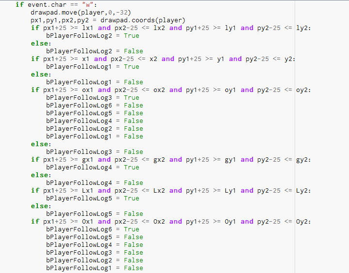

Description:
My game is like Frogger where the player is trying to ride the logs to the other side without missing a log and falling into the water.
Reflection:
I think I could have put more time into having something happen to the player if he/she missed the log and fell into the water, I could have also added a finishing platform on the other side so that the player knew where to end.
github repository
Screen shots,explanations
This bit of code is checking whether or not the player is on a log or not.